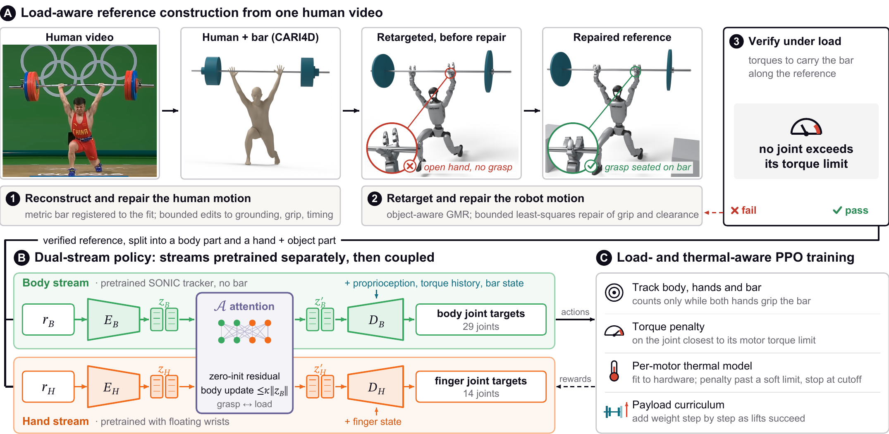

MuscleMan
Humanoid Whole-Body Control for Heavy-Object Prehensile Interaction
Paper under double-blind review
Abstract
Humanoid motion trackers now reproduce diverse human motion on real hardware, yet whole-body loco-manipulation remains limited to light objects and largely non-dexterous interaction. Heavy prehensile lifting exposes the limits of pure imitation: human demonstrations provide only kinematic references, and under load the embodiment gap between human and humanoid drives the robot's weakest actuators into torque saturation and thermal shutdown. We present MuscleMan, a whole-body dexterous loco-manipulation framework that constructs dynamically feasible references from human videos, couples separately pretrained whole-body and dexterous-hand priors in a dual-stream policy, and trains it to avoid overloading and overheating its motors under a progressive payload curriculum. On hardware, MuscleMan exceeds the manufacturer's payload limits and clean-and-jerks 11.3 kg with a commercial barbell under Olympic-style judging, making this the heaviest autonomous lift by a humanoid of its size.
Videos
Method
Copying a human lift overloads the robot's weakest joints, so MuscleMan adapts the demonstration to the robot in three stages.

Load-aware reference
Reconstruct the human lift from video, retarget it to the robot, repair the grasp, and verify that no joint exceeds its torque limit under load.
Dual-stream policy
A body stream and a dexterous-hand stream are pretrained separately on suitable data, then coupled through a zero-initialized attention block.
Load- and thermal-aware training
A torque penalty on the most loaded joint, a per-motor thermal model fitted to hardware logs, and a progressive payload curriculum.
Results in Simulation
Only the full recipe completes lifts. Completed lifts out of 64 episodes per payload:
| Recipe | 0.5 kg | 6.8 kg | 9.1 kg | 11.3 kg |
|---|---|---|---|---|
| Raw reference, scratch MLP | 0 | 0 | 0 | 0 |
| Repaired reference, scratch MLP | 0 | 0 | 0 | 0 |
| Dual-stream policy | 0 | 0 | 0 | 0 |
| + separate task pretraining | 0 | 0 | 0 | 0 |
| + payload curriculum (MuscleMan) | 47 | 44 | 47 | 22 |
BibTeX
@inproceedings{anonymous2026muscleman,
title = {MuscleMan: Humanoid Whole-Body Control for Heavy-Object Prehensile Interaction},
author = {Anonymous Authors},
booktitle = {Under review},
year = {2026}
}